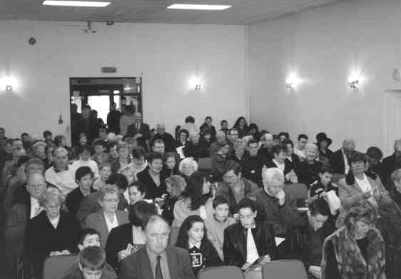

Down through the years the 'old chapel' has served the parish of Carrickfergus extremely well through good times and bad. This is a nostalgic look at its role as a community centre since 1988.
When the then new church of St Nicholas opened in 1981 the 'Old Chapel' faced an uncertain future. As it turned out, it lay derelict for seven years until in 1988, the doors opened again to reveal its transformation into a wonderfully refurbished community centre.
It was the need to re-house the parish bingo, which lost its regular venue in the primary school, that started the ball rolling. Initially only the bare minimum of renovation was envisaged, but the penny soon dropped that the old building which had served the parishioners of Carrickfergus so well since 1826 had the potential to continue as a fully fledged community centre.
Design drawings were commissioned and ACE workers employed to carry out the work. But it soon became evident that ACE workers alone would not be able complete such an ambitious project and the then parish priest, Fr McGarry, gave the go-ahead for builders to be brought in to to complete the task. Working under the supervision of Fr Tony Curran, the builder, Brian O'Kane, transformed the dream into a reality. (Brian went on to do magnificent jobs in refurbishing the churches in Greenisland and Whitehead and of course to rebuild the new church in Carrickfergus).
After the official opening in December 1988, a management committee was set up initially under the chairmanship of Sean Nesson. It set about the task of maximising the potential of this wonderful new facility, hoping to make a fresh start in drawing together the people of the parish, whose morale was very low after the difficult years of the 70's and 80s.
In the intervening years many happy occasions have taken place. The early years saw a flurry of activity such as monthly dances, bazaars, treasure hunts, table quizzes and Nights at the Races, all run by different groups in the parish. Existing organisations such as the bingo committee were quick to make use of the new facilities. Others, such as the Bowling Club after some initial reservations about the suitability of the floor, were soon to make their home in the new surroundings.
But it was the senior citizens who were to set the pace with the establishment of an Autumn Club. Their weekly activities and regular evening dances drew great numbers. and surprised founder members. such as Jim Conlon and Teresa and Joe Boylan. Another fresh initiative was the setting up of WEA (Workers Education Association) evening classes by Bridget Breen . These proved to be excellent cultural events. Bridget established set dancing and Aidrian Mac Sheafraidh taught an Irish language class, the first in the parish since the 60s. Mary McAllister ran a crochet class and the work of the participants was displayed on a number of occasions in the town library.
The late Eilish Crickard presided over the local oral history 'Reminiscence and Recall' class which produced two books on the history of Carrick based on the memories of those taking part. One book launch took place in the community centre with the famous Belfast writer Sam McAughtry as guest of honour.
Another unexpected and unusual event, which springs to mind, was when a group of Russian classical singers and musicians performed to a packed house in October 1990.
Because of the ACE employment scheme at the time, one of the luxuries the centre enjoyed was that of a full-time caretaker. The late John Crawley was the first to take up the post and is remembered as a gentleman and a willing worker.
Now a thriving community centre
Source: A Short History of the Parish of Carrickfergus -Hugh Donnelly 2000
Another face that will always be remembered is that of the late Donard Haveron. Donard was always at hand to open up, close, and to greet people with a warm smile and a friendly word. He took great pride in keeping the centre in mint condition and particularly enjoyed his hours on duty with the senior citizens of the Autumn Club.
The ever cheerful Arthur Magee followed for a short while, but with the ending of the ACE scheme the parish was unable to afford to continue to employ a caretaker.
The introduction of the preschool playgroup to the centre was a major event and ensured that the building was rarely idle. Some changes had to be made to the original design of the centre, such as the provision of a new wooden floor to replace the impractical carpet finish.
Also a new heating system was installed to replace the noisy original and the management committee were successful in obtaining financial support in the form of grants for some of this work.
It came as a collective shock to the system when on a Friday night in April 1997 the parish church was destroyed by fire and in the space of 24 hours Mass had to be hurriedly transferred back to the old chapel. This made things very difficult for parish life as liturgical and social events now had to share the same limited space. Indeed this would have proved impossible were it not for the heroic work of people who worked around the clock for many months insuring that as many events as possible could continue uninterrupted.
Memories have been made in the old building since its conversion. Indeed we owe much to the enthusiasm and hard work of many people, who served on the hall committee, particularly through those difficult days.
When the new church opened in December 2000 the old chapel reverted back to being used as a community centre. It has served us well down the years. May the sounds of the life and laughter of the community continue to be heard around its walls for many generations to come.
Last Sunday Mass Old Chapel 26th November 2000